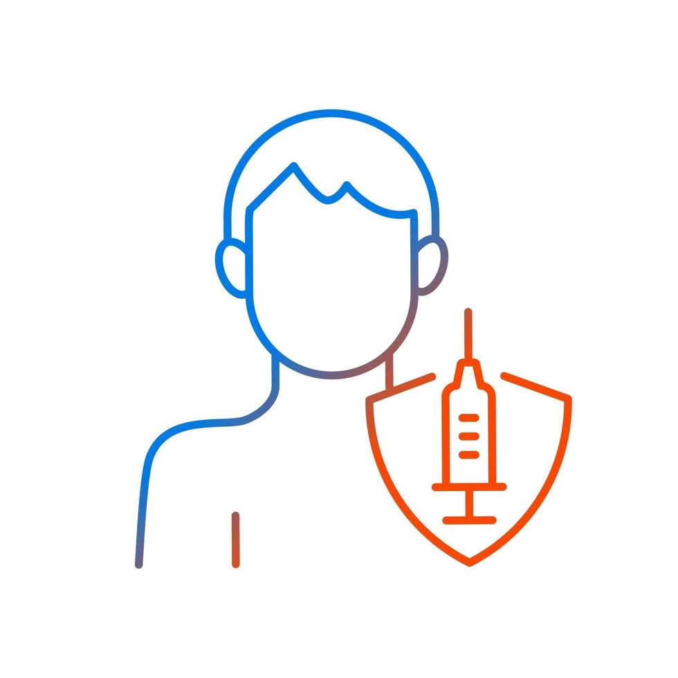
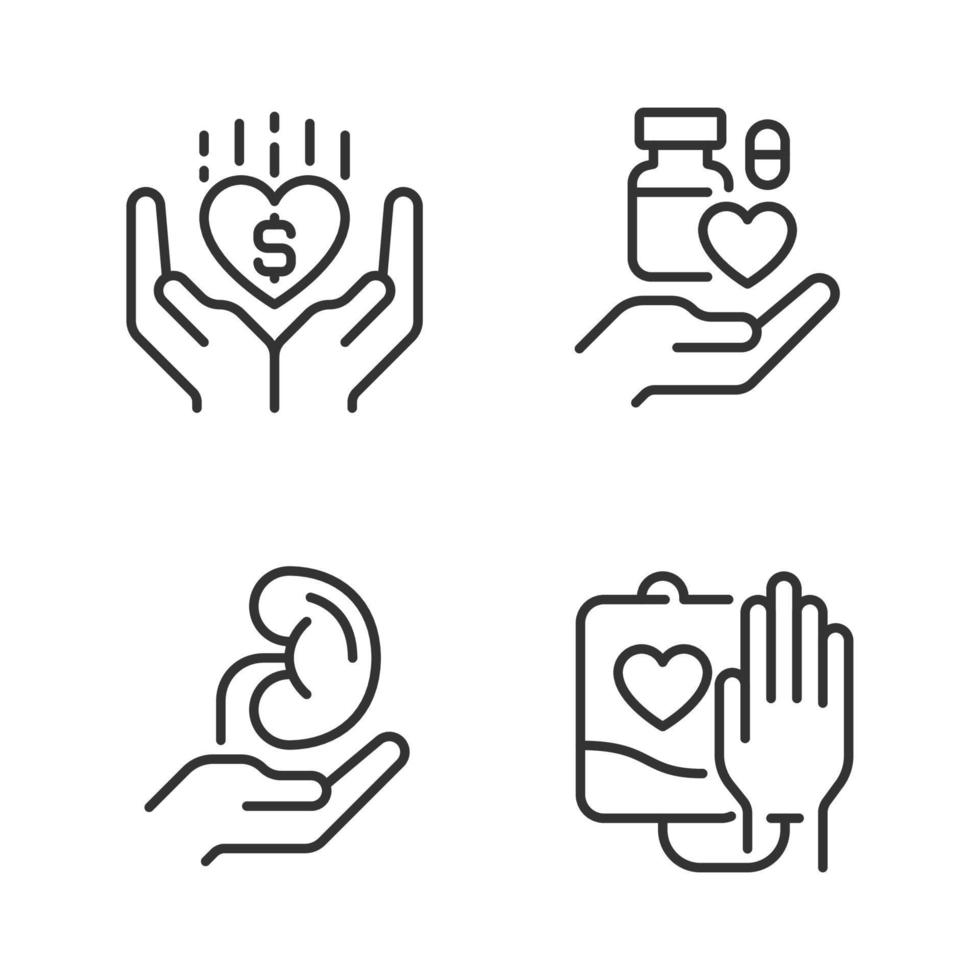

Por que escolher nossos serviços
Nossa clínica conta com um ótimo atendimento, visando prover o melhor serviço para atender nossos clientes.

Temos profissionais especializados na área de fisioterapia, com vários anos de experiência e conhecimento.

Possuímos preços baixos e acessíveis com o intuito de fornecer atendimento ao público em geral.